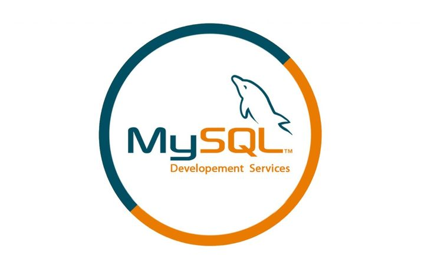

Руководство по языку
программирования SQL
MySQL представляет систему управления реляционными
базами данных (СУБД). На сегодняшний день это одна
из самых популярных систем управления базами данных.

Изначальным разработчиком данной СУБД была шведская компания MySQL AB. В 1995 году она выпустила первый релиз MySQL. В 2008 году компания MySQL AB была куплена компанией Sun Microsystems, а в 2010 году уже компания Oracle поглотила Sun и тем самым приобрела права на торговую марку MySQL. Поэтому MySQL на сегодняшний день развивается под эгидой Oracle.
Все SQL выражения начинаются с одного из следующих ключевых слов:
SELECT
INSERT
UPDATE
DELETE
ALTER
DROP
CREATE
USE
SHOW
В конце каждого выражения должна стоять точка с запятой “;”.
SQL выражение CREATE DATABASE используется для создания новой базы данных (далее – БД).
Общий синтаксис имеет следующий вид:
CREATE DATABASE имя_базы_данных;
Имя БД должно быть уникальным для RDBMS.
Для удаления существующих таблиц и всех её данных из базы данных (далее – БД) используется SQL выражение DROP TABLE.
Данная команда имеет следующий вид:
DROP TABLE имя_таблицы;
Для добавления новых записей в таблицу базы данных (далее – БД) мы используем SQL выражение INSERT INTO.
Общий вид выражения имеет следующий вид:
INSERT INTO имя_таблицы (колонка1, колонка2 ...)
VALUES (значение1, значение2 ...);
Для удаления данных из базы данных (далее – БД) мы используем SQL выражение DELETE.
Для того, чтобы указать, какие именно данные мы хотим удалить используется условный оператор WHERE.
DELETE FROM имя_таблицы
WHERE [условие];
Что такое полная форма SQL?
Полная форма SQL - это Язык структурированных запросов (Structured Query Language).
Легко ли изучать SQL?
Да, чтобы стать профессионалом в SQL, потребуется от 3 до 6 месяцев, так что это язык программирования, который сравнительно легко освоить.
Можете ли вы выучить SQL самостоятельно?
Да, вы можете легко выучить SQL самостоятельно, просто найдите хороший ресурс, такой как W3Schools или YouTube.
Для чего используется SQL?
SQL используется для широкого спектра задач управления базами данных, но вот некоторые из его наиболее распространенных приложений: создание, чтение, обновление и удаление данных (CRUD), а также выполнение сложных запросов для анализа информации.